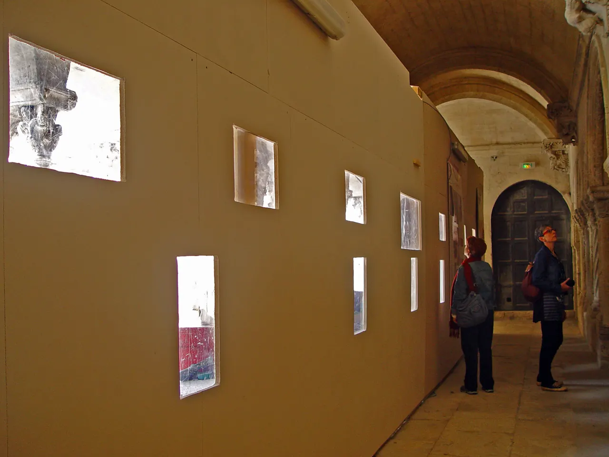

{kind=link}

Carrières des Lumières
높이 15m 거대한 지하 백색 석회암 채석장 동굴 전체를 디지털 캔버스로 변모시킨 세계 최초·최대 규모의 몰입형 미디어 아트 공간. 7,000㎡ 암벽과 바닥을 감싸는 빛과 음악의 향연.

아를 레퓌블리크 광장(Place de la République)에 자리한 프로방스 중세 로마네스크 예술의 최고 걸작(유네스코 세계유산)이다.
3세기 아를의 초대 주교였던 성 트로핌에게 헌정된 성당으로, 서쪽 정문 파사드의 「최후의 심판」 팀파눔과 석조 기둥 조각들은 산티아고 순례길(아를 길)을 걷던 수많은 중세 순례자들에게 깊은 종교적 전율을 선사했다.
성당 옆에 붙은 사각형 수도원 회랑(Cloître)은 한 안뜰 안에 12세기 로마네스크 양식(북쪽·동쪽 갤러리)과 14세기 고딕 양식(남쪽·서쪽 갤러리)이 공존하여, 두 시대의 건축 양식과 정교한 기둥머리(Capitaux) 조각을 한자리에서 비교할 수 있는 중세 조각의 교과서다.
"원형경기장의 소란스러운 세속의 열기를 뒤로하고, 중세 수도사들의 깊은 영성과 숨 막히도록 섬세한 성서 부조 조각을 감상하며 침묵에 잠기는 시간이다." 성당 본당의 팀파눔을 감상한 뒤 회랑으로 들어가 4면 갤러리의 기둥머리 조각을 천천히 둘러보고, 2층 테라스에 올라 성당 종탑과 지붕을 바라보는 45~60분 코스를 추천한다.
| 운영시간 | 재확인 |
|---|---|
| 휴무 | 재확인 |
| 요금 | 생트로핌 회랑 €6 |
| 예약 | 재확인 |
| 소요시간 | 60분 재확인 |
성당 서쪽 입구는 개선문 형태를 띠고 있으며, 중앙 팀파눔에는 영광의 그리스도가 사복음서의 상징(천사, 사자, 황소, 독수리)에 둘러싸여 있다. 그리스도의 오른편에는 천국으로 향하는 구원받은 자들이, 왼편에는 쇠사슬에 묶여 지옥 불로 끌려가는 죄인들의 고통스러운 표정이 생생히 묘사되어 있다.
| 항목 | 상세 정보 |
|---|---|
| 위치 | Place de la République, 13200 Arles |
| 운영 시간 | 매일 09:00–19:00 (동절기 17:00까지, 마지막 입장 30분 전) |
| 입장료 | 성당 본당 무료 / 회랑 단독 입장 성인 €5.00 (Pass Monument Avantage €13.00 포함) |
| 조명/빛 팁 | 성당 파사드 팀파눔 조각은 정오의 수직 직사광보다 오전의 부드러운 사선광에서 음영이 살아나 가장 입체적으로 관찰됨 |
| 연계 동선 | Place de la République 광장 맞은편에 아를 시청사(Hôtel de Ville)와 고대 로마 오벨리스크(Obélisque d'Arles) 인접 |
높이 15m 거대한 지하 백색 석회암 채석장 동굴 전체를 디지털 캔버스로 변모시킨 세계 최초·최대 규모의 몰입형 미디어 아트 공간. 7,000㎡ 암벽과 바닥을 감싸는 빛과 음악의 향연.

기원전 6세기 켈트 성소에서 헬레니즘 도시를 거쳐 로마 제국의 온천 휴양도시로 번영했던 거대한 고대 발굴 유적지. 갈리아에서 가장 완벽하게 보존된 기원전 1세기 로마 영묘와 개선문 '레 장티크(Les Antiques)'.

알피유(Alpilles) 산맥 해발 245m 석회암 절벽 위에 우뚝 솟은 중세 독수리 요새 마을. 자연 암반과 성벽이 하나로 결합된 레보 성채(Château des Baux) 폐허와 올리브 계곡 대파노라마.

세계적인 식물학자 파트리크 블랑의 300㎡ 거대한 수직 정원(Mur Végétal) 외벽 아래 40여 개 프로방스 전통 식재료 좌판이 모인 아비뇽의 활기찬 실내 중앙 미식 시장.

14세기 가톨릭 교황청이 로마를 떠나 68년간 머물렀던 서유럽 최대의 중세 고딕 요새 궁전. 베네딕토 12세의 구궁전과 클레멘스 6세의 신궁전, 마테오 조바네티의 프레스코화와 히스토패드 3D 증강현실 복원.

12세기 론(Rhône) 강을 건너 교황령 아비뇽과 프랑스 왕국을 잇던 920m의 유일한 석조 다리. 소빙하기의 거센 홍수로 22개 아치 중 4개와 2층 생니콜라 예배당만 남은 유네스코 세계유산.